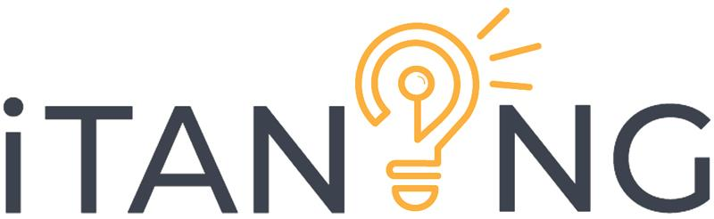
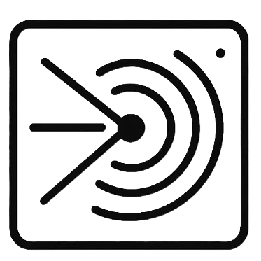
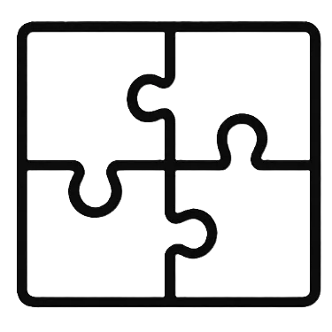

Materials science · Machine learning · Quezon City, PH
Joven Paolo Angeles builds optimization frameworks for matter and machines.
PhD candidate in Materials Science at the University of the Philippines, accelerating nanoparticle synthesis with Bayesian optimization — and Senior AI Engineer at DOST-ASTI, shipping retrieval-augmented and multi-agent systems for the public sector.
№ 01 — Profile
Two laboratories: one for atoms, one for language.
My doctoral work develops a Bayesian optimization framework that cuts the experimental cost and time of nanoparticle synthesis — applying responsible AI principles to make nanomaterial research more reproducible, sustainable, and accessible.
By day I am a Senior AI Engineer at DOST-ASTI, where I architect production-grade retrieval-augmented generation and multi-agent systems for government use: ELT pipelines, agentic retrieval, and document processing that serve real stakeholders. I prioritize reliability over hype — these systems have to work outside the lab.
Off the clock, I run automated ML-based trading algorithms from a home lab that doubles as family infrastructure — model training and blockchain experiments alongside a NAS, a smart home, and a fleet of self-hosted apps. I also run PRINT3D.MNL, a 3D printing studio for computational design.
Science and art are different expressions of the same drive: to understand, optimize, and create.
№ 02 — Research & work
A decade across nanomaterials, spectroscopy, and applied AI.
Sixteen conference papers presented in the Philippines, Taiwan, and Japan; current work bridges materials discovery and language systems.
-
Aug 2025 — present
Senior AI Engineer · DOST-ASTI
Lead development of JuanaKNOW, the DOST chatbot for IP licensing, startup funding, and technology transfer — agentic RAG, deep research agents, and multi-agent architecture on Agno, Ollama, and Postgres.
-
Mar — Jul 2025
Data Scientist · DOST-ASTI
Built an ELT pipeline for public-sector documents; LLM-assisted parsing and deduplication, hybrid retrieval with pgvector, and a unified databank served through WSO2.
-
Jan — Dec 2023
University Researcher I · UP Diliman
Led development of a graphene–MOF composite for membrane applications in pandemic mitigation; managed bulk synthesis via electrospinning.
-
Oct — Dec 2022
Visiting PhD Student · KAPLAT Program, Japan
Synthesized gold–iron oxide core-shell nanoparticles for SERS; characterized magnetoplasmonic properties in exchange-biased ferrofluids via Raman spectroscopy.
-
2014 — 2022
Earlier research roles · UP system
Zeolite wastewater treatment, graphene hybrid nanostructures for ultrasensitive metal-ion detection, mechanical characterization of Cordillera textiles, and thin-film growth by spray pyrolysis.
№ 03 — Selected projects
Things that ship: from government AI platforms to weekend solvers.
01
JuanaKNOW by PROPEL
Multi-agent AI system for market intelligence and technology assessment under DOST Program PROPEL — helping innovators evaluate novelty, access funding, and navigate commercialization.
Ask JuanaKNOW
02
iTANONG
Natural-language interface to government databases — query in Filipino, English, or Taglish. A multilingual NLIDB system by DOST-ASTI.
Learn about iTANONG03
Philippine WFH Optimizer
Combines official Philippine holidays with leave credits to surface the most efficient multi-day breaks.
Plan long weekends
04
XRD Analyzer
Interactive X-ray diffraction analyzer — upload XY/CSV files, highlight peaks, and speed up material characterization workflows.
Launch analyzer05
ChunkingExpress
Document chunking playground for RAG pipelines with configurable segment strategies and live previews.
Try the RAG tool
06
Puzzle-a-Day Solver
Algorithm X-powered solver that enumerates daily solutions for the DragonFjord A-Puzzle-A-Day board, with visual tiling proofs.
Solve today's puzzle№ 04 — Working stack
Tools chosen for reproducibility, not résumés.
Scientific computing
- Pythondata & algorithms
- MATLABnumerics
- Rstatistics
- JupyterLabinteractive work
- Pandasdata wrangling
ML & optimization
- PyTorchdeep learning
- GPyTorchGaussian processes
- BoTorch + AxBayesian optimization
- JAXhigh-performance ML
- CUDAGPU compute
LLMs & agents
- Agnomulti-agent runtime
- LangChainLLM apps
- Ollama / vLLMinference
- Unslothfine-tuning
- Hugging Facemodel hub
- n8nautomation
Web & APIs
- React + Vitefrontend
- TypeScripttyped JS
- FastAPI / FlaskPython APIs
- Node.jsruntime
Infra & observability
- Dockercontainers
- GitHub Actions / JenkinsCI/CD
- Prometheusmetrics
- OpenTelemetry + OpenLitLLM observability
- Nginx Proxy Managerrouting
Data & creative
- PostgreSQLrelational + pgvector
- ChromaDBembeddings
- p5.js / Processinggenerative art
- Plotly / Streamlitvisualization
№ 05 — Photography
The other instrument: a camera.
First place and category winner at the International Photography Awards 2018; exhibited at the Singapore International Photography Festival.


{kind=link}
Selected frames from the landscapes, street, infrared, and astrophotography series.
№ 06 — Recognition
Scholarships, medals, and gallery walls.
-
ASTHRDP-NSC PhD Scholarcurrent
Department of Science and Technology · Jan 2024 – present · full-tuition scholarship with stipend
-
ASTHRDP-NSC MS Scholar
Department of Science and Technology · Aug 2018 – Jul 2020
-
University Scholar, ×4 semesters
University of the Philippines · semester GWA of at least 1.45
-
College Scholar, ×3 semesters
University of the Philippines · semester GWA of at least 1.75
Academic
-
International Photography Awards 2018
"Icarus" — 1st place & category winner, Sports · "Swan Lake" — 1st place, Nature-Seasons · "A Roof in Hong Kong" — 2nd place, Architecture
-
International Photography Awards 2019
"The Mansion" and "Tree of Life" — 3rd place · "Bad Weather Ahead" — honorable mention
-
Siena International Photo Awards 2020
Shortlisted
-
Singapore International Photography Festival 2018
Depth of Feel exhibit · DECK, Singapore · Oct 5–30, 2018